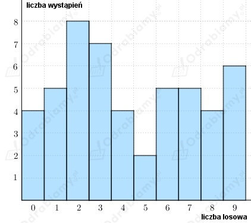

a)
Zauważamy, że osoba A wykonała łącznie 24 rzuty kostką, natomiast osoba B wykonała 21 rzutów kostką.
Łącznie obie te osoby wykonały 45 rzutów kostką.
Liczba rzutów kostką jest nieparzysta, zatem medianą jest wartość środkowa.
Zauważamy, że wyrzucono:
Dominuje liczba oczek równa sześć, wobec tego:
Obliczamy średnią arytmetyczną liczb oczek wyrzuconych łącznie:
b)
Zauważamy, że osoba A wykonała łącznie 24 rzuty kostką, natomiast osoba C wykonała 21 rzutów kostką.
Łącznie obie te osoby wykonały 45 rzutów kostką.
Liczba rzutów kostką jest nieparzysta, zatem medianą jest wartość środkowa.
Zauważamy, że wyrzucono:
Dominuje liczba oczek równa jeden, wobec tego:
Obliczamy średnią arytmetyczną liczb oczek wyrzuconych łącznie:
c)
Zauważamy, że osoba B wykonała łącznie 21 rzutów kostką, natomiast osoba C również wykonała 21 rzutów kostką.
Łącznie obie te osoby wykonały 42 rzutów kostką.
Liczba rzutów kostką jest parzysta, zatem medianą jest średnia arytmetyczna
dwóch wartości środkowych.
Zauważamy, że wyrzucono:
Nie ma dominującej liczby oczek, ponieważ każda liczba oczek występuje 7 razy.
Obliczamy średnią arytmetyczną liczb oczek wyrzuconych łącznie:
a)
Zauważamy, że wszystkich liczb mamy łącznie: 3+5+8+3+5+4+6+10+4+2=50.
Obliczamy średnią arytmetyczną liczb z diagramu:
Wszystkich liczb jest parzysta liczba, zatem mediana jest średnia arytmetyczna
dwóch sąsiednich środkowych liczb:
Skoro wszystkich liczb jest 50, a liczb mniejszych bądź równych liczbie 2 jest 16, to wyznaczamy
jakim procentem liczby 50 jest liczba 16.
Zatem wnioskujemy, że liczba 2 odpowiada 32. centylowi.
Skoro wszystkich liczb jest 50, a liczb mniejszych bądź równych liczbie 7 jest 44, to wyznaczamy
jakim procentem liczby 50 jest liczba 44.
Zatem wnioskujemy, że liczba 7 odpowiada 88. centylowi.
b)
Rysujemy diagram dla liczb z drugiego wiersza tablicy:

Zauważamy, że wszystkich liczb mamy łącznie: 50.
Obliczamy średnią arytmetyczną liczb z diagramu:
Wszystkich liczb jest parzysta liczba, zatem mediana jest średnia arytmetyczna
dwóch sąsiednich środkowych liczb:
Zauważamy, że dominująca liczbą jest liczba 2 (występuje 8 razy), wobec tego:
Skoro wszystkich liczb jest 50, a liczb mniejszych bądź równych liczbie 3 jest 24, to wyznaczamy
jakim procentem liczby 50 jest liczba 24.
Zatem wnioskujemy, że liczba 3 odpowiada 48. centylowi.